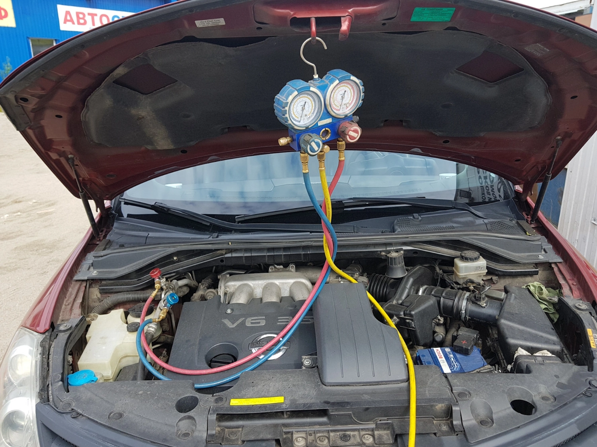

Заправка и диагностика кондицинера |
|---|
| Проверим утечки высоким давлением |
| Заправим фреон по норме с маслом |
| Найдем электрические неисправности |
| Заменим и отремонтируем нужное |
Автомобильный кондиционер это сложное устройство, в котором пересекаютя электричество, механика и гидравлика, мы занимаемся не просто простой заправкой но и поиском, а так же устранением различных неисправностей.